Funciones personalizadas
# Tema personalizado
blank_theme <- function(aspect.ratio = 1/1.61){
theme(panel.grid.minor = element_blank(),
panel.grid.major = element_blank(),
panel.background = element_blank(),
axis.line = element_blank(),
aspect.ratio = aspect.ratio,
axis.ticks = element_blank(),
text = element_text(colour = "gray50"), # Eliminar
legend.position = "none"
)
}
Múltiples hipótesis: FWER
Corrección de Bonferroni
La probabilidad de encontrarnos con al menos un error de tipo 1 al realizar múltiples comparaciones independientes incrementa a una tasa de \(1-(1-\alpha)^m\), donde m es el número de comparaciones. Grafiquemos este cambio:
library(ggplot2)
error <- data.frame(m = 1:20)
error["P_alpha"] <- 1 - (1-0.05)^error$m
error.rate <- ggplot(data = error, aes(m, P_alpha)) +
geom_line(color = rgb(118,78,144, maxColorValue = 255)) +
scale_y_continuous(breaks = NULL) +
scale_x_continuous(breaks = c(1, 2, 5, 10, 20)) +
expand_limits(y = c(0,1)) +
blank_theme() +
geom_hline(yintercept = 0.05,
colour = "deepskyblue4", linetype = "dashed") +
geom_hline(yintercept = 0.5,
colour = "firebrick", linetype = "dashed",
alpha = 0.5) +
geom_hline(yintercept = 1,
colour = "firebrick", linetype = "dashed",
alpha = 0.5) +
annotate("text", x = 0, y = 0.08,
label = "0.05", colour = "deepskyblue4",
alpha = 0.5) +
annotate("text", x = 0, y = 0.53,
label = "0.5", colour = "firebrick",
alpha = 0.5) +
annotate("text", x = 0, y = 0.97,
label = "1", colour = "firebrick",
alpha = 0.5) +
labs(title = "P(error) al incrementar el número de pruebas (m)",
subtitle = bquote({1 - (1- alpha)^m}),
x = element_blank(),
y = element_blank(),
caption = "King & Eckersley (2019)"
)
error.rate
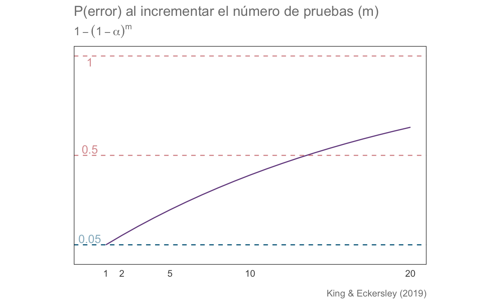
Ahora apliquemos la corrección de Bonferroni, dada por \(\alpha/m\), de modo que la ecuación anterior queda formulada como: \(1-(1-\alpha/m)^m\)
error["P_bonf"] <- 1 - (1-(0.05/error$m))^error$m
error.corr <- ggplot(data = error, aes(m, P_bonf)) +
geom_line(color = rgb(118,78,144, maxColorValue = 255)) +
scale_y_continuous(breaks = NULL) +
scale_x_continuous(breaks = c(1, 2, 5, 10, 20)) +
expand_limits(y = c(0.04, 0.06)) +
blank_theme() +
geom_hline(yintercept = 0.05,
colour = "deepskyblue4", linetype = "dashed") +
geom_hline(yintercept = 0.04,
colour = "lightslategray", linetype = "dashed",
alpha = 0.5) +
geom_hline(yintercept = 0.06,
colour = "lightslategray", linetype = "dashed",
alpha = 0.5) +
annotate("text", x = 0, y = 0.0505,
label = "0.05", colour = "deepskyblue4",
alpha = 0.5) +
annotate("text", x = 0, y = 0.0405,
label = "0.04", colour = "lightslategray",
alpha = 0.5) +
annotate("text", x = 0, y = 0.0595,
label = "0.06",colour = "lightslategray",
alpha = 0.5) +
labs(title = "P(error) al corregir según el número de pruebas (m)",
subtitle = bquote({1 - (1- (alpha/m))^m}),
x = element_blank(),
y = element_blank(),
caption = "King & Eckersley (2019)"
)
error.corr
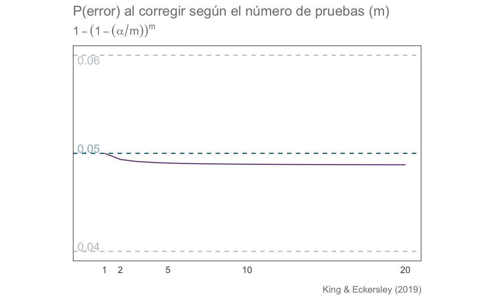
set.seed(45)
n <- 1000
robs <- data.frame(z = rnorm(n))
robs["color"] <- ifelse(robs$z < -1.96 | robs$z > 1.96,
"firebrick", "deepskyblue4")
robs.plot <- ggplot(data = robs, aes(z)) +
geom_density(color = "deepskyblue4") +
blank_theme() +
labs(title =
"Observaciones aleatorias a un alpha de 0.05",
subtitle = "Bandas indican límites del LS ",
caption = paste(n, " datos simulados"),
x = "Z",
y = element_blank()
) +
geom_vline(xintercept = -1.96,
colour = rgb(118,78,144, maxColorValue = 255),
linetype = "dashed"
) +
geom_vline(xintercept = 1.96,
colour = rgb(118,78,144, maxColorValue = 255),
linetype = "dashed"
) +
geom_point(aes(x = z, y = 0),
color = robs$color, alpha = 0.3) +
scale_y_continuous(breaks = NULL) +
scale_x_continuous(breaks = c(-3, -1.96, -1, 0, 1, 1.96, 3),
labels =
as.character(c(-3, -1.96, -1, 0, 1, 1.96, 3))
) +
annotate("text", x = 3, y = 0.5,
label = paste("# sign = ",
length(robs$color[robs$color ==
"firebrick"]),
"/", n),
colour = "firebrick"
)
robs.plot
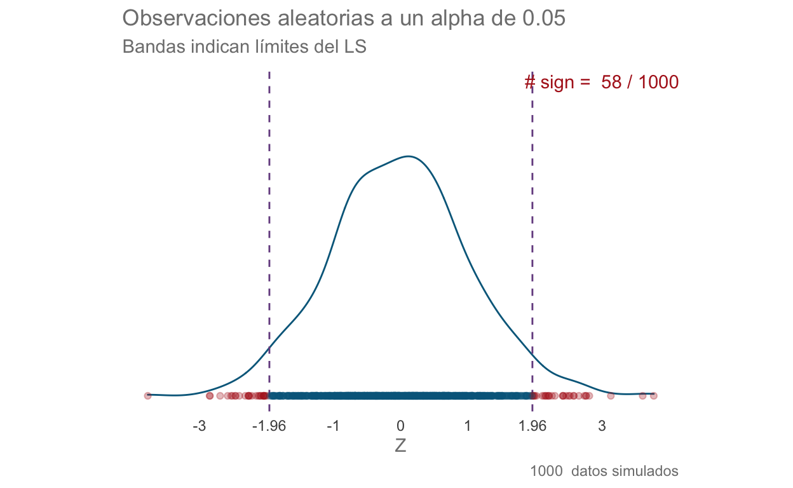
set.seed(45)
n <- 1000
a.corr <- (0.05/n)/2
sig.lev <- abs(qnorm(a.corr))
robs <- data.frame(z = rnorm(n))
robs["color"] <- ifelse(robs$z < -sig.lev | robs$z > sig.lev,
"firebrick", "deepskyblue4")
rcor.plot <- ggplot(data = robs, aes(z)) +
geom_density(color = "deepskyblue4") +
blank_theme() +
labs(title = "Observaciones aleatorias a un alpha de 0.05",
subtitle = "Bandas indican límites del LS corregido",
caption = paste(n, " datos simulados"),
x = "Z",
y = element_blank()
) +
geom_vline(xintercept = -sig.lev,
colour = rgb(118,78,144, maxColorValue = 255),
linetype = "dashed"
) +
geom_vline(xintercept = sig.lev,
colour = rgb(118,78,144, maxColorValue = 255),
linetype = "dashed"
) +
geom_point(aes(x = z, y = 0),
color = robs$color, alpha = 0.3) +
scale_y_continuous(breaks = NULL) +
scale_x_continuous(breaks = c(-3, -1.96, -1, 0, 1, 1.96, 3),
labels =
as.character(c(-3, -1.96, -1, 0, 1, 1.96, 3))
) +
annotate("text", x = 2.5, y = 0.5,
label = paste("# sign = ",
length(robs$color[robs$color ==
"firebrick"]),
"/", n),
colour = "firebrick"
)
rcor.plot
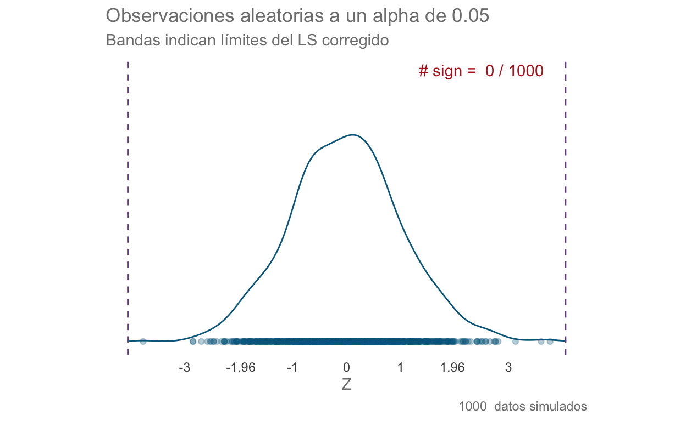
ANOVA Sheirer-Ray-Hare
Carguemos los datos:
'data.frame': 24 obs. of 3 variables:
$ Especie: chr "Especie1" "Especie1" "Especie1" "Especie1" ...
$ Sexo : chr "Machos" "Machos" "Machos" "Machos" ...
$ Ala : num 21.5 19.6 20.9 22.8 14.8 15.6 13.5 16.4 14.5 17.4 ...Realicemos la prueba de normalidad para cada nivel de cada variable:
norm.mili <- data.frame(grupo = NA, n = NA, W = NA, p = NA)
cols <- colnames(mili)[1:2]
especies <- as.character(unique(mili$Especie))
sexos <- as.character(unique(mili$Sexo))
for (i in seq_along(cols)) {# Cicla entre las columnas indicadas
if (i == 1) { # Si es la primera columna:
# Cicla entre los valores de la columa Especies
for (j in seq_along(especies)) {
shap <- shapiro.test(mili$Ala[mili[cols[i]] == especies[j]])
norm.mili[j,] <- c(especies[j],
# Tamaño de muestra para esa iteración
length(mili$Ala[mili[cols[i]] == especies[j]]),
round(shap$statistic, 2),
round(shap$p.value, 2)
)
}
}
if (i == 2) { # Si es la segunda columna
# Cicla entre los valores de la columna Sexo
for (k in 1:length(sexos)) {
shap <- shapiro.test(mili$Ala[mili[cols[i]] == sexos[k]])
norm.mili[j+k,] <- c(sexos[k], # Sexo de la iteración
# Tamaño de muestra para esa iteración
length(mili$Ala[mili[cols[i]] == sexos[k]]),
round(shap$statistic, 2), #
round(shap$p.value, 2)
)
}
}
}
norm.mili
grupo n W p
1 Especie1 8 0.92 0.46
2 Especie2 8 0.93 0.51
3 Especie3 8 0.94 0.63
4 Machos 12 0.97 0.94
5 Hembras 12 0.97 0.86Comprobemos la homogeneidad de varianzas. Dado que los datos se ajustaron a una distribución normal, podemos utilizar una prueba de Bartlett:
bartlett.test(Ala~Sexo, data = mili)
Bartlett test of homogeneity of variances
data: Ala by Sexo
Bartlett's K-squared = 2.8086, df = 1, p-value = 0.09376bartlett.test(Ala~Especie, data = mili)
Bartlett test of homogeneity of variances
data: Ala by Especie
Bartlett's K-squared = 1.0294, df = 2, p-value = 0.5977Con la prueba de Levene:
library(car)
leveneTest(Ala~Sexo, data = mili)
Levene's Test for Homogeneity of Variance (center = median)
Df F value Pr(>F)
group 1 3.1875 0.088 .
22
---
Signif. codes: 0 '***' 0.001 '**' 0.01 '*' 0.05 '.' 0.1 ' ' 1leveneTest(Ala~Especie, data = mili)
Levene's Test for Homogeneity of Variance (center = median)
Df F value Pr(>F)
group 2 1.6819 0.2101
21 Realicemos la prueba Scheirer-Ray-Hare:
library(rcompanion)
library(FSA)
scheirerRayHare(Ala ~ Especie + Sexo, data = mili)
DV: Ala
Observations: 24
D: 0.9995652
MS total: 50 Df Sum Sq H p.value
Especie 2 249.75 4.9972 0.08220
Sexo 1 693.38 13.8735 0.00020
Especie:Sexo 2 7.00 0.1401 0.93237
Residuals 18 199.38 dunnTest(Ala~Especie, data = mili, method = "bonferroni")
Comparison Z P.unadj P.adj
1 Especie1 - Especie2 2.2278707 0.02588914 0.07766741
2 Especie1 - Especie3 1.2730690 0.20299356 0.60898068
3 Especie2 - Especie3 -0.9548017 0.33967797 1.00000000Bajo este criterio, las diferencias parecieran no ser significativas. Apliquemos entonces el ANOVA de dos vías paramétrico y veamos qué encontramos:
Df Sum Sq Mean Sq F value Pr(>F)
Especie 2 55.26 27.63 13.082 0.00031 ***
Sexo 1 138.72 138.72 65.679 2.04e-07 ***
Especie:Sexo 2 6.89 3.45 1.631 0.22331
Residuals 18 38.02 2.11
---
Signif. codes: 0 '***' 0.001 '**' 0.01 '*' 0.05 '.' 0.1 ' ' 1¡SORPRESA! Ahora encontramos diferencias en ambos niveles, aunque no se encontró una interacción entre los factores. Realicemos la prueba HSD de Tukey para analizar las diferencias a cada nivel.
TukeyHSD(res.mili)$Especie
diff lwr upr p adj
Especie2-Especie1 -3.7125 -5.5670304 -1.8579696 0.0002068047
Especie3-Especie1 -2.0125 -3.8670304 -0.1579696 0.0322559559
Especie3-Especie2 1.7000 -0.1545304 3.5545304 0.0756330927Veamos ahora estos resultados de manera gráfica utilizando un gráfico de interacción:
inter.plot <- ggplot(data = mili, aes(x = Sexo, y = Ala, color = Sexo)) +
geom_violin() + geom_boxplot(width = 0.1) +
facet_wrap(~Especie) +
blank_theme(1.61) +
labs(title = "Interacción de la [Ala] (mg/100 ml) en milípedos",
subtitle = "Especie + Sexo",
x = element_blank(),
y = element_blank(),
caption = "Datos: milipedos.csv")
inter.plot
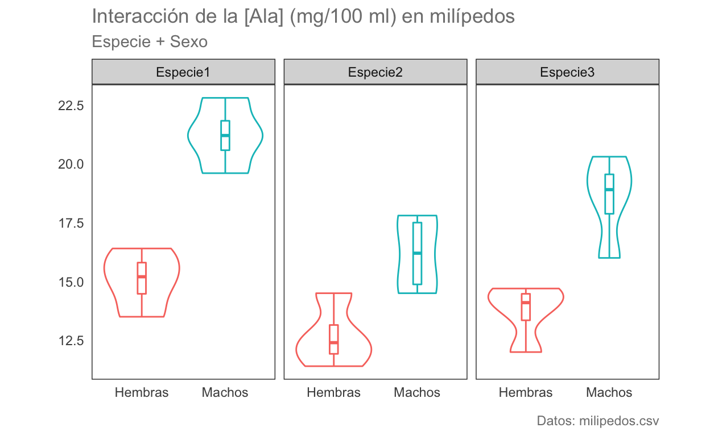
La variable Especie sola
espec.plot <- ggplot(data = mili, aes(x = Especie, y = Ala, color = Especie)) +
geom_violin() + geom_boxplot(width = 0.1) +
blank_theme() +
labs(title = "Interacción de la [Ala] (mg/100 ml) en milípedos",
subtitle = "Especie",
x = element_blank(),
y = element_blank(),
caption = "Datos: milipedos.csv")
espec.plot
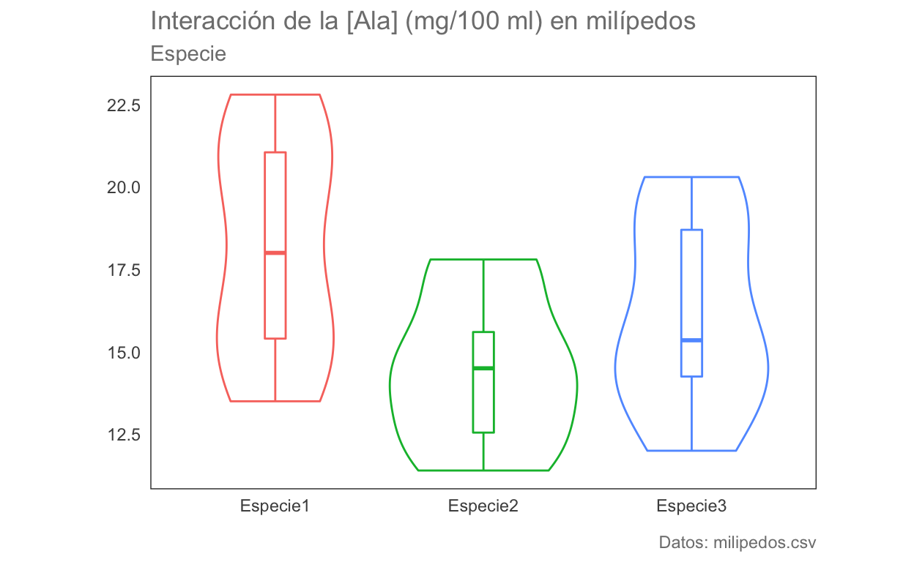
La variable sexo sola
sexos.plot <- ggplot(data = mili, aes(x = Sexo, y = Ala, color = Sexo)) +
geom_violin() + geom_boxplot(width = 0.1) +
blank_theme() +
labs(title = "[Ala] (mg/100 ml) en milípedos",
subtitle = "Especie",
x = element_blank(),
y = element_blank(),
caption = "Datos: milipedos.csv")
sexos.plot

Ejercicio
Realizar un ANOVA Scheirer-Ray-Hare con la base de datos strawberry (Horst et al. 2005). Una base de datos multivariada con medidas de peso, % de Botrytis, % de otras epecies fúngicas y una evaluación de Phomopsis en las hojas para 4 tratamientos con 3 réplicas cada uno.
straw <- read.csv("data/strawberry.csv")
rmarkdown::paged_table(head(straw))
str(straw)
'data.frame': 16 obs. of 6 variables:
$ Tratamiento: int 3 3 3 3 6 6 6 6 8 8 ...
$ Rep : int 1 2 3 4 1 2 3 4 1 2 ...
$ Peso : num 6.9 8.3 8.4 7.95 8.6 8.5 8.2 9.5 6.2 9 ...
$ Botrytis : num 4.1 5.13 6.07 2.72 1.19 ...
$ Hongos : num 17.24 5.65 8.8 9.51 17.06 ...
$ Eval : num 1 1 1.5 1.5 1 1 0.5 1 1 3 ...summary(straw)
Tratamiento Rep Peso Botrytis
Min. :3.00 Min. :1.00 Min. :6.200 Min. : 0.5533
1st Qu.:5.25 1st Qu.:1.75 1st Qu.:7.275 1st Qu.: 1.1441
Median :7.00 Median :2.50 Median :8.250 Median : 3.4065
Mean :6.50 Mean :2.50 Mean :7.947 Mean : 5.5122
3rd Qu.:8.25 3rd Qu.:3.25 3rd Qu.:8.525 3rd Qu.: 7.1228
Max. :9.00 Max. :4.00 Max. :9.500 Max. :18.3824
Hongos Eval
Min. : 1.844 Min. :0.000
1st Qu.: 5.637 1st Qu.:1.000
Median : 9.156 Median :1.000
Mean : 9.758 Mean :1.375
3rd Qu.:13.418 3rd Qu.:1.625
Max. :17.235 Max. :3.000 Hay un par de elementos con los cuales hay que tener cuidado: 1) las variables tratamiento y réplica son variables categóricas y fueron detectadas como variables de enteros, 2) la variable Eval está en escala ordinal no en escala de intervalo o de razón, por lo cual queda automáticamente descartada para pruebas paramétricas. Corrijamos entonces el punto 1:
Comparaciones Multivariadas
Datos para comparaciones Mv
- Base de datos iris. Medidas de 4 variables cuantitativas para 50 flores de cada especie de Iris: setosa, versicolor y virginica. Al explorarla vemos que todo está en orden, las cuatro variables cuantitativas fueron detectadas como tal y la única variable categórica fue asignada correctamente:
rmarkdown::paged_table(head(iris))
str(iris)
'data.frame': 150 obs. of 5 variables:
$ Sepal.Length: num 5.1 4.9 4.7 4.6 5 5.4 4.6 5 4.4 4.9 ...
$ Sepal.Width : num 3.5 3 3.2 3.1 3.6 3.9 3.4 3.4 2.9 3.1 ...
$ Petal.Length: num 1.4 1.4 1.3 1.5 1.4 1.7 1.4 1.5 1.4 1.5 ...
$ Petal.Width : num 0.2 0.2 0.2 0.2 0.2 0.4 0.3 0.2 0.2 0.1 ...
$ Species : Factor w/ 3 levels "setosa","versicolor",..: 1 1 1 1 1 1 1 1 1 1 ...summary(iris)
Sepal.Length Sepal.Width Petal.Length Petal.Width
Min. :4.300 Min. :2.000 Min. :1.000 Min. :0.100
1st Qu.:5.100 1st Qu.:2.800 1st Qu.:1.600 1st Qu.:0.300
Median :5.800 Median :3.000 Median :4.350 Median :1.300
Mean :5.843 Mean :3.057 Mean :3.758 Mean :1.199
3rd Qu.:6.400 3rd Qu.:3.300 3rd Qu.:5.100 3rd Qu.:1.800
Max. :7.900 Max. :4.400 Max. :6.900 Max. :2.500
Species
setosa :50
versicolor:50
virginica :50
Prueba \(T^2\) de Hotelling
Es una extensión multivariada de la prueba T de Student; por lo tanto, es una prueba paramétrica. Comparemos si las especies versicolor y virginica son iguales. Para ello es importante revisar los supuestos del análisis:
Normalidad
$setosa
Test Statistic p value Result
1 Mardia Skewness 25.6643445196298 0.177185884467652 YES
2 Mardia Kurtosis 1.29499223711605 0.195322907441935 YES
3 MVN <NA> <NA> YES
$versicolor
Test Statistic p value Result
1 Mardia Skewness 25.1850115362466 0.194444483140265 YES
2 Mardia Kurtosis -0.57186635893429 0.567412516528727 YES
3 MVN <NA> <NA> YES
$virginica
Test Statistic p value Result
1 Mardia Skewness 26.2705981752915 0.157059707690356 YES
2 Mardia Kurtosis 0.152614173978342 0.878702546726567 YES
3 MVN <NA> <NA> YESmvn(iris, subset = "Species", mvnTest = "hz",
desc = F)$multivariateNormality
$setosa
Test HZ p value MVN
1 Henze-Zirkler 0.9488453 0.04995356 NO
$versicolor
Test HZ p value MVN
1 Henze-Zirkler 0.8388009 0.2261991 YES
$virginica
Test HZ p value MVN
1 Henze-Zirkler 0.7570095 0.4970237 YESmvn(iris, subset = "Species", mvnTest = "royston",
desc = F)$multivariateNormality
$setosa
Test H p value MVN
1 Royston 31.51803 2.187653e-06 NO
$versicolor
Test H p value MVN
1 Royston 7.85262 0.0847746 YES
$virginica
Test H p value MVN
1 Royston 8.141444 0.06776605 YESIgualdad de dispersión multivariada
Al aplicar la prueba global vemos que al parecer no hay diferencias importantes en las dispersiones multivariadas:
library(vegan)
dist.mat <- vegdist(iris[,1:4], method = "euclidean", type = c("median"))
groups <- as.character(iris$Species)
# Realizar el procedimiento
disp.mv <- betadisper(dist.mat, group = groups, type = "median")
disp.mv
Homogeneity of multivariate dispersions
Call: betadisper(d = dist.mat, group = groups, type = "median")
No. of Positive Eigenvalues: 4
No. of Negative Eigenvalues: 0
Average distance to median:
setosa versicolor virginica
0.4814 0.7057 0.8161
Eigenvalues for PCoA axes:
PCoA1 PCoA2 PCoA3 PCoA4
630.008 36.158 11.653 3.551 anova(disp.mv) # Prueba de hipótesis
Analysis of Variance Table
Response: Distances
Df Sum Sq Mean Sq F value Pr(>F)
Groups 2 2.9092 1.45458 10.748 4.4e-05 ***
Residuals 147 19.8941 0.13533
---
Signif. codes: 0 '***' 0.001 '**' 0.01 '*' 0.05 '.' 0.1 ' ' 1La prueba post-hoc confirma los resultados:
mod.HSD <- TukeyHSD(disp.mv)
mod.HSD <- data.frame(mod.HSD$group, comp = dimnames(mod.HSD$group)[[1]])
mod.HSD
diff lwr upr p.adj
versicolor-setosa 0.224334 0.05012946 0.3985385 7.630680e-03
virginica-setosa 0.334722 0.16051751 0.5089266 3.315921e-05
virginica-versicolor 0.110388 -0.06381649 0.2845926 2.937401e-01
comp
versicolor-setosa versicolor-setosa
virginica-setosa virginica-setosa
virginica-versicolor virginica-versicolorComparación Multivariada:
Extraemos dos grupos a comparar:
Aplicamos la prueba:
library(Hotelling)
hot.t2 <- hotelling.test(x = virginica, y = versicolor)
hot.t2
Test stat: 86.148
Numerator df: 4
Denominator df: 95
P-value: 0 Al parecer, los promedios de las mediciones multivariadas son diferentes.
Comparaciones univariadas
Realizaremos 4 comparaciones univariadas ¿tiene sentido aplicar una corrección de Bonferroni? Algo a notar es que la prueba aplicada en este caso es la prueba de Welch; es decir, una prueba bajo el supuesto de desigualdad de varianzas (muestras heterocedásticas). Para aplicar la prueba T de Student solo hay que agregar el argumento equal.var = TRUE a la función.
t.test(Sepal.Length~Species, versi.virg)
Welch Two Sample t-test
data: Sepal.Length by Species
t = -5.6292, df = 94.025, p-value = 1.866e-07
alternative hypothesis: true difference in means is not equal to 0
95 percent confidence interval:
-0.8819731 -0.4220269
sample estimates:
mean in group versicolor mean in group virginica
5.936 6.588 t.test(Sepal.Width~Species, versi.virg)
Welch Two Sample t-test
data: Sepal.Width by Species
t = -3.2058, df = 97.927, p-value = 0.001819
alternative hypothesis: true difference in means is not equal to 0
95 percent confidence interval:
-0.33028364 -0.07771636
sample estimates:
mean in group versicolor mean in group virginica
2.770 2.974 t.test(Petal.Length~Species, versi.virg)
Welch Two Sample t-test
data: Petal.Length by Species
t = -12.604, df = 95.57, p-value < 2.2e-16
alternative hypothesis: true difference in means is not equal to 0
95 percent confidence interval:
-1.49549 -1.08851
sample estimates:
mean in group versicolor mean in group virginica
4.260 5.552 t.test(Petal.Width~Species, versi.virg)
Welch Two Sample t-test
data: Petal.Width by Species
t = -14.625, df = 89.043, p-value < 2.2e-16
alternative hypothesis: true difference in means is not equal to 0
95 percent confidence interval:
-0.7951002 -0.6048998
sample estimates:
mean in group versicolor mean in group virginica
1.326 2.026 Análisis Multivariado de la Varianza
Extensión Multivariada del Análisis de la Varianza; por lo tanto es el equivalente a una prueba \(T^2\) de Hotelling con más de dos grupos (al igual que el ANOVA con respecto a la prueba t de Student)
Ahora apliquemos la prueba utilizando la función Manova() de la librería car
model <- lm(cbind(Sepal.Length,
Petal.Length,
Sepal.Width,
Petal.Width)~Species, data = iris)
Manova(model, test.statistic = "Wilks")
Type II MANOVA Tests: Wilks test statistic
Df test stat approx F num Df den Df Pr(>F)
Species 2 0.023439 199.15 8 288 < 2.2e-16 ***
---
Signif. codes: 0 '***' 0.001 '**' 0.01 '*' 0.05 '.' 0.1 ' ' 1# La forma por defecto de R, con la traza de Pillai
res.man <- manova(cbind(Sepal.Length, Petal.Length, Sepal.Width, Petal.Width)~Species, data = iris)
summary(res.man)
Df Pillai approx F num Df den Df Pr(>F)
Species 2 1.1919 53.466 8 290 < 2.2e-16 ***
Residuals 147
---
Signif. codes: 0 '***' 0.001 '**' 0.01 '*' 0.05 '.' 0.1 ' ' 1summary.aov(res.man)
Response Sepal.Length :
Df Sum Sq Mean Sq F value Pr(>F)
Species 2 63.212 31.606 119.26 < 2.2e-16 ***
Residuals 147 38.956 0.265
---
Signif. codes: 0 '***' 0.001 '**' 0.01 '*' 0.05 '.' 0.1 ' ' 1
Response Petal.Length :
Df Sum Sq Mean Sq F value Pr(>F)
Species 2 437.10 218.551 1180.2 < 2.2e-16 ***
Residuals 147 27.22 0.185
---
Signif. codes: 0 '***' 0.001 '**' 0.01 '*' 0.05 '.' 0.1 ' ' 1
Response Sepal.Width :
Df Sum Sq Mean Sq F value Pr(>F)
Species 2 11.345 5.6725 49.16 < 2.2e-16 ***
Residuals 147 16.962 0.1154
---
Signif. codes: 0 '***' 0.001 '**' 0.01 '*' 0.05 '.' 0.1 ' ' 1
Response Petal.Width :
Df Sum Sq Mean Sq F value Pr(>F)
Species 2 80.413 40.207 960.01 < 2.2e-16 ***
Residuals 147 6.157 0.042
---
Signif. codes: 0 '***' 0.001 '**' 0.01 '*' 0.05 '.' 0.1 ' ' 1La prueba post-hoc es una prueba HSD de Tukey por cada variable.
Tukey multiple comparisons of means
95% family-wise confidence level
Fit: aov(formula = Sepal.Width ~ Species, data = iris)
$Species
diff lwr upr p adj
versicolor-setosa -0.658 -0.81885528 -0.4971447 0.0000000
virginica-setosa -0.454 -0.61485528 -0.2931447 0.0000000
virginica-versicolor 0.204 0.04314472 0.3648553 0.0087802Veamos un gráfico de violín para cada variable de cada especie:
library(gridExtra)
sepall.plot <- ggplot(data = iris, aes(x = Species, y = Sepal.Length, colour = Species)) +
geom_violin() +
geom_boxplot(width = 0.1) +
blank_theme(1/1.61) +
labs(title = "Sepal length",
x = element_blank(),
y = element_blank())
sepalw.plot <- ggplot(data = iris, aes(x = Species, y = Sepal.Width, colour = Species)) +
geom_violin() +
geom_boxplot(width = 0.1) +
blank_theme(1/1.61) +
labs(title = "Sepal width",
x = element_blank(),
y = element_blank())
petall.plot <- ggplot(data = iris, aes(x = Species, y = Petal.Length, colour = Species)) +
geom_violin() +
geom_boxplot(width = 0.1) +
blank_theme(1/1.61)+
labs(title = "Petal length",
x = element_blank(),
y = element_blank())
petalw.plot <- ggplot(data = iris, aes(x = Species, y = Petal.Width, colour = Species)) +
geom_violin() +
geom_boxplot(width = 0.1) +
blank_theme(1/1.61)+
labs(title = "Sepal width",
x = element_blank(),
y = element_blank())
grid.arrange(sepall.plot, sepalw.plot, petall.plot, petalw.plot)
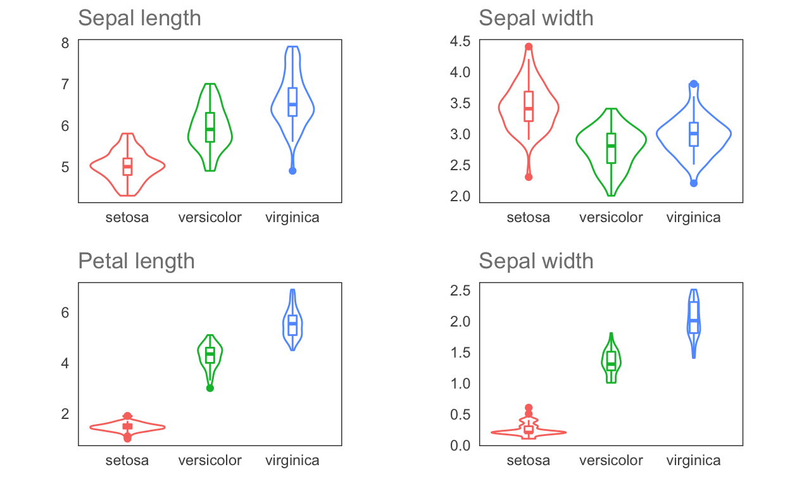
O veamos un gráfico de coordenadas paralelas, el cual nos permite analizar las mediciones de cada variable de cada individuo en un mismo gráfico:
library(GGally)
coord.plot <- ggparcoord(iris,
columns = 1:4,
groupColumn = 5,
showPoints = T,
scale = "std",
order = "anyClass",
alphaLines = 0.5) +
blank_theme(1/1.61) +
labs(title = "Gráfico de coordenadas paralelas",
subtitle = "Valores escalados",
y = element_blank(),
x = element_blank(),
caption = "Datos: Iris")
coord.plot
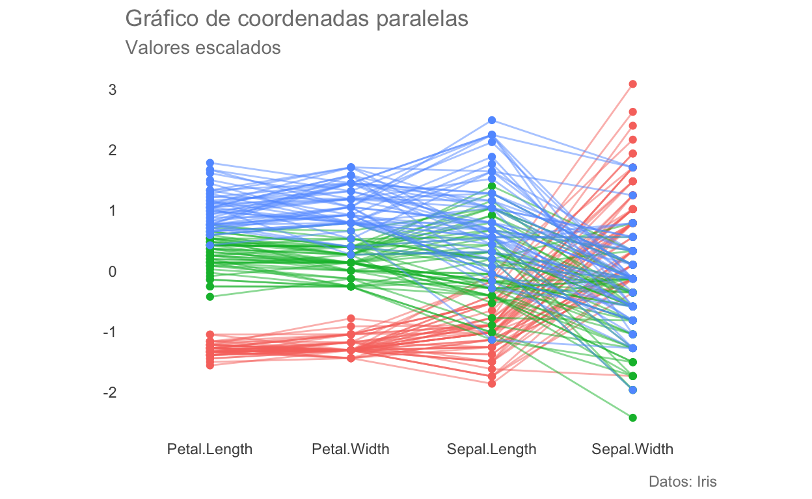
Análisis Permutacional Multivariado de la Varianza:
Los pasos a seguir son básicamente los mismos que los que seguimos para realizar la prueba de homogeneidad de matrices de dispersión. Este supuesto es, debido a la aproximación permutacional, (posiblemente) el supuesto más importante para esta prueba. Es importante notar que existe una corrección para grupos con varianzas no homogéneas.
set.seed(1)
n <- 100 # Tamaño de muestra
# Valores observados
tr <- rbinom(100, 1, 0.5) # Distribución binomial con p(éxito) = 50%
y <- 1 + tr + rnorm(n, 0, 3) #Valores de respuesta
s <- sample(tr, length(tr), FALSE) # Muestreo aleatorio sin remplazo
diff(by(y, s, mean)) # Promedio de las diferencias
[1] 1.283456permut.plot <- ggplot(data = dist, aes(f)) +
geom_density(color = "deepskyblue4",
fill = "deepskyblue3", alpha = 0.5) +
geom_vline(xintercept = 1.3,
colour = rgb(118,78,144, maxColorValue = 255)) +
blank_theme() +
labs(title = "Resultados de un experimento permutacional",
subtitle = "Distribución de diferencias entre grupos",
caption = "Datos simulados",
x = element_blank(),
y = element_blank())
permut.plot
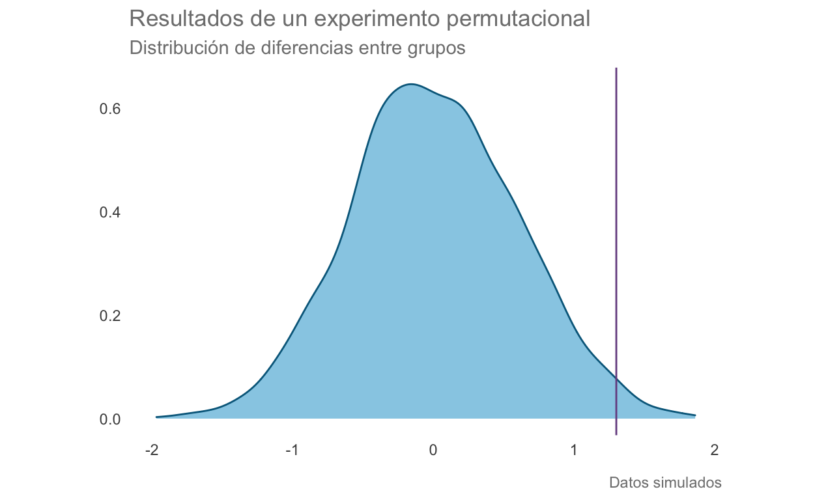
Apliquemos entonces la prueba. Para ello lo primero será calcular la matriz de distancias (de no pasar una matriz de distancias a la prueba hará por default la disimilaridad de Bray-Curtis)
# Matriz de distancias
dist.mat <- vegdist(iris[,1:4], method = "euclidean")
# Objeto que contiene los distintos niveles de agrupamiento, anidados o no
grps <- iris[,5]
Ahora podemos aplicar el PERMANOVA. De los resultados podemos observar que la principal división entre especies está dada por la longitud del sépalo, seguida por el ancho. Las cuatro variables explican el 100% del espacio multivariado (\(R^2\) de los residuales = 0). Una forma compacta de reportar estos resultados sería: “[…] diferencias significativas en la longitud del sépalo (\(F_{1, 143}\) = \(5.1*10^18\); p < 0.001)”
adonis2(dist.mat~iris$Sepal.Length*iris$Sepal.Width+
iris$Petal.Length*iris$Petal.Width,
data = grps, permutations = 999)
Permutation test for adonis under reduced model
Terms added sequentially (first to last)
Permutation: free
Number of permutations: 999
adonis2(formula = dist.mat ~ iris$Sepal.Length * iris$Sepal.Width + iris$Petal.Length * iris$Petal.Width, data = grps, permutations = 999)
Df SumOfSqs R2 F Pr(>F)
iris$Sepal.Length 1 513.34 0.75340 5.1323e+18 0.001 ***
iris$Sepal.Width 1 84.34 0.12377 8.4316e+17 0.001 ***
iris$Petal.Length 1 78.31 0.11493 7.8293e+17 0.001 ***
iris$Petal.Width 1 5.38 0.00790 5.3791e+16 0.001 ***
iris$Sepal.Length:iris$Sepal.Width 1 0.00 0.00000 0.0000e+00 1.000
iris$Petal.Length:iris$Petal.Width 1 0.00 0.00000 0.0000e+00 1.000
Residual 143 0.00 0.00000
Total 149 681.37 1.00000
---
Signif. codes: 0 '***' 0.001 '**' 0.01 '*' 0.05 '.' 0.1 ' ' 1Veamos la dispersión multivariada:
plot(betadisper(dist.mat, grps), hull = F, ellipse = T)
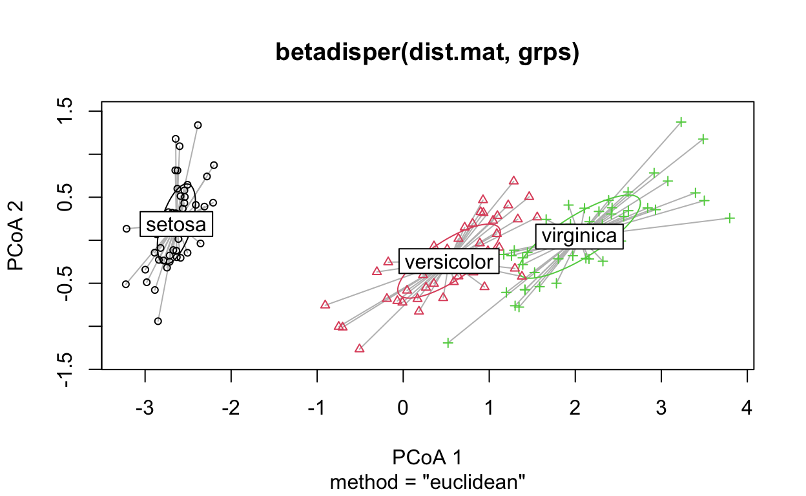
Podemos utilizar también un Escalamiento Multi-Dimensional No Paramétrico. Esta técnica es similar al PCA en el sentido de que proyecta un espacio altamente dimensional a un espacio con menos dimensiones (k), tratando de preservar las distancias entre cada punto. En pocas palabras, es una “hoja” o “lámina” de pocas dimensiones dentro de un espacio altamente dimensional.
iris.mds <- metaMDS(dist.mat, distance = "euclidean", k = 2, trace = F)
mds.dims <- data.frame(NMDS1 = iris.mds$points[,1],
NMDS2 = iris.mds$points[,2])
mds.plot.data <- cbind(mds.dims, iris)
# Correlaciones de cada factor con cada dimensión reducida (flechas)
fit <- envfit(iris.mds, iris)
arrow <- data.frame(fit$vectors$arrows,
R = fit$vectors$r, P = fit$vectors$pvals)
arrow["Variable"] <- rownames(arrow)
arrow.p <-subset(arrow, P <= 0.05)
Posteriormente podemos graficarlo. El “estrés” representa la fidelidad con respecto al espacio original; entre más alto sea, mayores serán las deformaciones (menor fue el éxito de preservar las distancias). En general, valores de estrés menores a 0.1 se consideran aceptables, menores a 0.05 como una buena representación y por encima de 0.3 indican una “ordenación” arbitraria. En nuestro gráfico, el estrés de 0.02 indica que la representación es fidedigna, que la mayor división entre especies se da en el eje x (usualmente) y que las variables más relacionadas con esa separación son la longitud y el ancho del pétalo, lo cual corresponde perfectamente con lo encontrado por el PERMANOVA.
mds.plot <- ggplot(mds.plot.data, aes(NMDS1, NMDS2)) +
geom_point(aes(color = Species), alpha = 0.7) +
stat_ellipse(aes(fill = Species),
type = "t", size = 1,
geom = "polygon", alpha = 0.2) +
labs(title = "Escalamiento Multidimensional no métrico (NMDS)",
subtitle = paste('Estrés =',round(iris.mds$stress,3)),
caption = "Datos: Iris") +
blank_theme() + theme(legend.position = "right") +
geom_segment(data = arrow.p,
aes(x=0, y=0, xend = NMDS1, yend = NMDS2,
lty = Variable),
#Flechas escaladas según su R^2
arrow = arrow(length = unit(.2, "cm")*arrow.p$R)
)
mds.plot
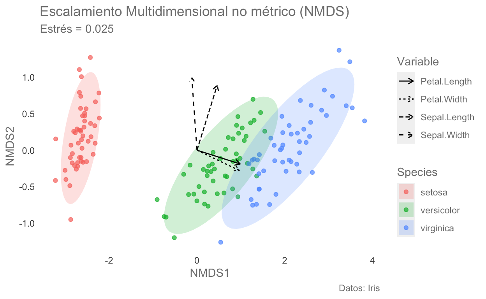